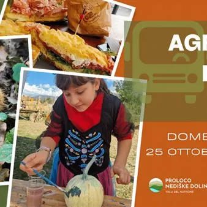

dom 25 ott · dalle 10:00
Agribus delle Valli Family - Zucche e Castagne 2026
Domenica 25 ottobre 2026 - Dalle ore 10:00 alle 16:00 Ritrovo presso il parcheggio della vecchia stazione di Cividale del Friuli L’Agribus delle Valli vi porta alla scoperta del territorio grazie alla visita delle aziende agricole e del territorio nel periodo delle zucche (anche…
 Indicazioni
Indicazioni
- Costi e prenotazioni
- Costo non indicato · Prenotazione non indicata
- Programma
- Programma da verificare. Apri la fonte ufficiale per orari e possibili aggiornamenti.
- In caso di maltempo
- Nessuna indicazione specifica pubblicata.
- Note
- Acquisito automaticamente dalla fonte.
L’EVENTO
Descrizione completa
Domenica 25 ottobre 2026 con partenza alle ore 10 da Cividale del Friuli, l’AGRIBUS DELE VALLI vi porta alla scoperta del territorio grazie alla visita delle aziende agricole e del territorio nel periodo delle zucche (anche di Halloween) e delle castagne! Prima di tutto faremo tappa al gubanificio Bon per una deliziosa colazione con caffè o cappuccino e dolce. In questa edizione dell’Agribus, adatto ad un pubblico di adulti, bambini e ragazzi, avremo la possibilità di immergerci nell’atmosfera dell’autunno, con la visita ad un’azienda agricola specializzata nella coltivazione delle zucche (ornamentali, commestibili e di Halloween) . Qui potremo anche scattare simpatiche foto nel cortile addobbato con spaventapasseri, balle di fieno e tante zucche colorate. Chi volesse, può acquistare la zucca che preferisce e giocare ad abbellirla con i colori che vi saranno messi a disposizione. Per pranzo avremo un tavolo riservato all’ Agriristoro Birra Gjulia a San Pietro al Natisone , dove gusteremo un delizioso panino farcito con prodotti a km 0 e una bibita (e per gli adulti, una fresca birra agricola artigianale). Nel pomeriggio, ci dirigeremo con il nostro bus verso Clastra, nei boschi di Julia Marmi, dove, in collaborazione con la manifestazione Sapori nelle Valli, potremo partecipare alla raccolta libera delle castagne nel bosco . Quanti lo volessero, sia grandi che piccini, possono vestirsi da streghe e maghi, vista la vicinanza con la festa di Halloween. PROGRAMMA:
Ore 10:00 partenza da Cividale del Friuli
Ore 10.15 arrivo al gubanificio Bon a San Pietro al Natisone per la colazione con bevanda calda e dolce
Ore 11.00 arrivo al giardino delle ZUCCHE di Degano Zucche a Ziracco
Ore 12:30 pranzo presso l’agriturismo Birra Gjulia ad Azzida, San Pietro al Natisone
Ore 14:30 raccolta delle CASTAGNE nel bosco di Clastra, nell’ambito della festa Sapori nelle Valli
Ore 16:00 rientro a Cividale del Friuli ACCOMPAGNATRICE: Elena Roppa, esperta di produzioni agroalimentari e di turismo enogastronomico e rurale. Evento solo su prenotazione entro venerdì 23 ottobre 2026. Costo: 35 euro adulti; 15 euro Under 12; Agevolazioni : due adulti con un bimbo 80 euro - due adulti con due bimbi 90 euro. NOTE: Consigliato abbigliamento comodo, K-way e scarpe sportive. Per la raccolta delle castagne, si consiglia di portare guanti e un cestino o borsa in tela.
In caso di pioggia, il programma potrebbe subire delle variazioni. Scopri i protagonisti dell’evento: visita i loro siti per conoscere storia, prodotti e attività:
- Gubanificio Bon: sito ufficiale
- Degano Zucche: sito ufficiale
- Agriturismo Birra Gjulia: sito ufficiale Evento realizzato con il sostegno del Distretto del Commercio Corte Natisonis.
IL PROGRAMMA
Programma e orari
Appuntamenti raccolti dalle fonti elencate. Dove manca un orario, non è ancora disponibile in questa scheda.
Programma pubblicato
- Ore 10:00 partenza da Cividale del Friuli
- Ore 10.15 arrivo al gubanificio Bon a San Pietro al Natisone per la colazione con bevanda calda e dolce
- Ore 11.00 arrivo al giardino delle ZUCCHE di Degano Zucche a Ziracco
- Ore 12:30 pranzo presso l’agriturismo Birra Gjulia ad Azzida, San Pietro al Natisone
- Ore 14:30 raccolta delle CASTAGNE nel bosco di Clastra, nell’ambito della festa Sapori nelle Valli
- Ore 16:00 rientro a Cividale del Friuli
INFORMAZIONI UTILI
Prima di partire
- Controllare la fonte prima di partire.
ORGANIZZAZIONE